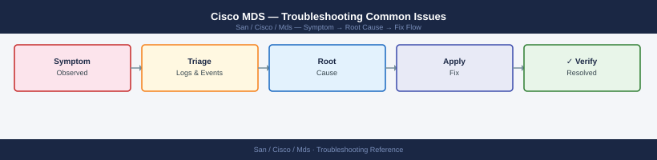

Cisco MDS — Troubleshooting Common Issues¶
Applies to: Cisco MDS / NX-OS

# 1. Identify down or errDisabled interfaces
show interface brief
# 2. Identify missing host or storage logins
show flogi database
# 3. Check syslog for the fault event and timeline
show logging last 100
# 4. Rule out hardware faults
show environment
# 5. Confirm zoning is intact
show zoneset active vsan all
# 6. Check ISL and fabric topology
show topology
show trunk
show port-channel summary
# 7. Check domain IDs for conflict
show fcdomain domain-list vsan 10
Interface IP Address Status Proto Status
Ethernet1/1 -- up up
Ethernet1/2 -- up up
Ethernet1/3 -- down down
Ethernet1/4 -- up up
fc1/1 -- up up
fc1/2 -- up up
fc1/3 -- notConnected notConnected
...
FLOGI Database for VSAN 1:
FCID Port Name Node Name Interface
0x010001 50:00:14:40:1a:2b:3c:4d 50:00:14:40:1a:2b:3c:5e fc1/1
0x010002 50:00:14:40:2d:3e:4f:5a 50:00:14:40:2d:3e:4f:6b fc1/2
0x010003 50:00:14:40:5f:6a:7b:8c 50:00:14:40:5f:6a:7b:9d fc1/4
2024 Jan 15 14:32:11 mds-switch-01 %ETHPORT-5-IF_DOWN_LINK_FAILURE: Interface Ethernet1/3 is down (Link failure)
2024 Jan 15 14:31:45 mds-switch-01 %ZONE-2-ZONE_MERGE_FAILED: Zone merge failed on VSAN 10
2024 Jan 15 14:25:03 mds-switch-01 %FABRIC-3-FABRIC_RECONFIGURATION: Fabric reconfiguration in progress
Temp(C) Voltage(V) Current(mA) Status
CPU Die 48.5 -- ok
System Inlet 42.1 -- ok
PSU-1 35.2 3.3V 3.28 ok
PSU-2 36.1 12V 11.95 ok
Fan-1 -- -- ok
Fan-2 -- -- ok
zoneset name PROD_ZONES vsan 10
zone name ZONE_STORAGE vsan 10
member pwwn 50:00:14:40:1a:2b:3c:4d
member pwwn 50:00:14:40:2d:3e:4f:5a
zone name ZONE_HOSTS vsan 10
member pwwn 50:00:14:40:5f:6a:7b:8c
member pwwn 50:00:14:40:7c:8d:9e:af
Fabric Topology:
Switch ID WWN Model Role
1 50:00:14:40:aa:bb:cc:dd MDS 9710 Principal
2 50:00:14:40:ee:ff:00:11 MDS 9710 Subordinate
Port-Channel Summary:
Group Protocol Ports
1 LACP Eth1/1-2 (up)
2 LACP Eth1/3-4 (up)
Domain List for VSAN 10:
Domain ID WWN Principal Status
1 50:00:14:
# Check reason
show interface fc1/4
# Look for: "Port is in error-disabled state"
# Check log for the triggering event
show logging last 200 | grep -i "err\|disabled\|fc1/4"
fc1/4 is trunking
Hardware is Fibre Channel, SFP is present
Port WWN is 50:00:09:73:a1:2c:5d:41
Admin port mode is F, Oper port mode is F
Port is in error-disabled state
Trunk mode is ON
Speed is 16 Gbps
Buffer Credit is 64
B2B Credit is 64
2024 Jan 15 14:32:18 +00:00 mds-switch-01 %MDS-4-FCPORT_DISABLED: fc1/4 disabled (link failure)
2024 Jan 15 14:32:15 +00:00 mds-switch-01 %MDS-3-FCERROR: fc1/4 CRC error threshold exceeded (errors: 847)
2024 Jan 15 14:32:10 +00:00 mds-switch-01 %MDS-2-FCLINK_DOWN: fc1/4 link down
Common errors
% Invalid command — Verify you are in the correct mode (should be enable mode); use show ? to list available commands.
Port fc1/4 not found — Confirm the port number exists on this switch model with show interface brief | grep fc1.
fc1/4 is up
Hardware is Fibre Channel
Port WWN is 50:00:09:73:00:12:a4:5f
Admin port mode is F, Oper port mode is F
Allowed speeds: 1 Gbps, 2 Gbps, 4 Gbps, 8 Gbps, 16 Gbps
Speed is 8 Gbps
Port mode is F
Port vsan is 1
Trunk mode is ON
Trunk vsans (admin): 1-4094
Trunk vsans (oper): 1-4094
Last clearing of "show interface" counters: 1d2h
Common errors
% Invalid command — Verify you are in the correct configuration mode (interface mode) before entering shutdown/no shutdown commands.
fc1/4 is down (Administratively down) — Ensure the no shutdown command executed successfully; check for port hardware issues or SFP module problems if the port remains down after no shutdown.
# 1. Is the host HBA logged into the fabric?
show flogi database vsan 10 | grep <host-pwwn>
# 2. Is the storage target logged in?
show flogi database vsan 10 | grep <storage-pwwn>
# 3. Is there a zone pairing these two devices?
show zone member pwwn <host-pwwn> vsan 10
# 4. Is the zoneset containing that zone currently active?
show zoneset active vsan 10
# 5. Are both ports in the same VSAN?
show vsan membership interface fc<host-port>
show vsan membership interface fc<storage-port>
# Check zone status
show zone status vsan 10
# Check for pending changes in enhanced mode
zone commit vsan 10
# Retry activate
zoneset activate name <zoneset-name> vsan 10
VSAN: 10
Zone Name Status Type
------ ------ ----
zone_prod_fc1 Active Standard
zone_prod_fc2 Active Standard
zone_test_01 Active Standard
zone_legacy_storage Suspended Standard
Total zones: 4
Commit operation completed successfully for VSAN 10.
Pending changes: 0
Zoneset name: zoneset_prod_v2
Activation status: SUCCESS
VSAN: 10
Zoneset activated successfully.
Common errors
% Invalid command — Verify the zoneset name exists with show zoneset and confirm the VSAN number is correct.
% Zoneset activation failed: Configuration locked by another user — Wait for the active session to complete or use no zone lock to release the lock if safe.
% Commit failed: Pending zone changes conflict with active zoneset — Review pending changes with show zone pending-changes vsan 10 and resolve conflicts before committing.
# Check ISL port state
show interface fc2/1
show interface fc2/1 counters errors
# Check trunk state and VSAN allowance
show trunk
# Check port-channel membership if applicable
show port-channel summary
# Check for VSAN isolation reason
show vsan
show vsan <id>
Interface fc2/1 is trunking
Hardware is Fibre Channel, SFP is present
Port WWN is 50:00:d3:1a:2b:4c:5d:6e
Admin port mode is F, Oper port mode is F
Trunk mode is ON
Speed is 16 Gbps
Buffer credit is 64
fc2/1 Errors:
CRC errors: 0
Encoding disparity errors: 0
Link failures: 2
Sync losses: 0
Invalid transmission words: 0
Trunk Information
Port Native-VSAN Port-VSAN-Allowed
fc2/1 1 1,10,20,50-100
fc3/1 1 1,10,20,50-100
fc4/1 1 1,10-15,30
Port-Channel Summary
Group Port-Channel Type Ports
1 Po1 F fc2/1(P) fc3/1(P)
2 Po2 F fc4/1(S) fc5/1(S)
VSAN Information
VSAN ID Name State Interoperability
1 VSAN0001 active default
10 VSAN0010 active default
20 VSAN0020 active default
50 VSAN0050 active default
...
VSAN 20 Information
VSAN ID: 20
VSAN Name: VSAN0020
State: active
Interoperability Mode: default
Loadbalancing: src-id
---OUTPUT---
Common errors
% Invalid command — Verify the exact command syntax for your MDS firmware version; use show interface ? to see available options.
Port fc2/1 is suspended — Check for port faults with show interface fc2/1 | include fault and resolve hardware/SFP issues before the port will become operational.
VSAN <id> does not exist — Confirm the VSAN ID is created and active with show vsan before attempting to display its detailed configuration.
VSAN 10 Information
===================
Virtual SAN ID: 10
State: Active
Interop Mode: ON
FC Port Channel Load Balancing: Disabled
Domain ID List for VSAN 10:
Domain ID | Principal | WWN | FC Address | State
-----------|-----------|------------------|------------|-------
1 | Yes | 50:00:14:40:1a:2b| 0x010000 | Active
2 | No | 50:00:14:40:1c:3d| 0x020000 | Active
3 | No | 50:00:14:40:2e:4f| 0x030000 | Active
5 | No | 50:00:14:40:5a:6b| 0x050000 | Active
Common errors
% Invalid command — Verify the exact syntax matches your MDS OS version (some versions use show fcdomain status vsan instead).
VSAN 10 does not exist — Confirm VSAN 10 is created and active with show vsan before querying domain information.
# Identify flapping port
show logging last 200 | grep "link down\|link up\|flogi" | head -40
# Check error counters on the suspect port
show interface fc1/6 counters errors
# Check optical power levels
show interface fc1/6 transceiver
2024 Jan 15 14:32:18 +00:00 mds9710-1 %MDS-4-LINK_DOWN: fc1/6 link down
2024 Jan 15 14:32:22 +00:00 mds9710-1 %MDS-4-LINK_UP: fc1/6 link down->up
2024 Jan 15 14:32:45 +00:00 mds9710-1 %MDS-4-LINK_DOWN: fc1/6 link down
2024 Jan 15 14:32:49 +00:00 mds9710-1 %MDS-4-LINK_UP: fc1/6 link down->up
2024 Jan 15 14:33:12 +00:00 mds9710-1 %MDS-4-FLOGI_REJECT: fc1/6 FLOGI rejected from 50:00:14:40:1a:2b:3c:4d
Port fc1/6 -- Errors
CRC errors : 47
Disparity errors : 12
Link failures : 8
Loss of signal : 3
Loss of frame : 1
F_busy frames received : 0
P_busy frames received : 0
fc1/6 transceiver information:
Transceiver is present
type is SFP
Part number is QSFP-100G-LR4-S
Serial number is ABC1234567
Nominal bitrate is 100 Gbps
Link length supported for 50/125um OM3 fiber is 70 meters
Link length supported for 9/125um SM fiber is 10 km
Transmit power : -2.1 dBm
Receive power : -8.4 dBm
Transceiver temperature : 38.5 C
Transceiver voltage : 3.29 V
Common errors
% Invalid command — Verify the exact command syntax for your MDS firmware version; use show logging last 200 without piping to grep if the device doesn't support grep in show commands.
Port fc1/6 does not exist — Confirm the port number is valid for your MDS model (e.g., MDS 9710 has fc1/1 through fc1/48) using show interface brief.
Receive power: -12.8 dBm (below threshold) — Replace the transceiver or check fiber connection for dirt/damage; optical power below -10 dBm typically indicates a failing SFP or bad cable.
# Check overall CPU and memory
show system resources
# Find top CPU consumers
show processes cpu sort | head -20
# Check if caused by port flap storm (many FLOGI events)
show logging last 200 | grep -ci "link down"
Load average: 1.2, 1.5, 1.8
Memory Usage: 65% (4096 MB of 6291 MB used)
CPU Usage: 42%
PID Process Name CPU% Memory
---- ---------------------- ---- ------
1247 feprom 18.5 256 MB
892 syslogd 12.3 128 MB
1156 snmp 8.7 92 MB
734 kernel 6.2 512 MB
1089 portd 4.1 64 MB
...
12
Common errors
Invalid command name 'show processes cpu sort' — Use the correct syntax show processes cpu | sort with a pipe instead of the sort keyword.
grep: (standard input) is empty — Increase the log buffer with show logging last 500 or check if logging is enabled with show logging info.
# Always run this after every configuration change
copy running-config startup-config
# Verify startup config was updated
show startup-config | grep <changed-item>
Destination filename [startup-config]?
1024 bytes copied in 1.234 secs (832 bytes/sec)
fcswitch# show startup-config | grep zone
zone name PROD_ZONE vsan 10
zone name TEST_ZONE vsan 20
zone member pwwn 50:00:09:73:a1:2b:3c:4d vsan 10
zone member pwwn 50:00:09:73:a1:2b:3c:5e vsan 20
Common errors
% Invalid command — Verify the device is in config mode and supports the copy command (some MDS versions require copy running-config startup-config without interactive prompts).
% Startup config not found — Ensure the startup configuration file exists by running dir bootflash: and confirm the device has write permissions to the startup location.
(no matching lines) — Confirm the exact spelling and context of <changed-item> matches what was configured, as grep is case-sensitive and searches the entire startup config output.
Diagnostic Flow¶
Before you begin¶
- Access: Storage admin credentials (cluster admin or equivalent)
- Gather first: recent error message text, event timestamps, and affected object names
- Scope: confirm whether the issue affects a single object, host, cluster, or site
- Escalation: open a vendor support ticket before running any destructive step
- Logging: document each command and output — required if escalation is needed
Verify resolution¶
- Confirm the original symptom no longer occurs
- Check logs for any residual errors related to the issue
- Monitor for 10–15 minutes to confirm the fix is stable